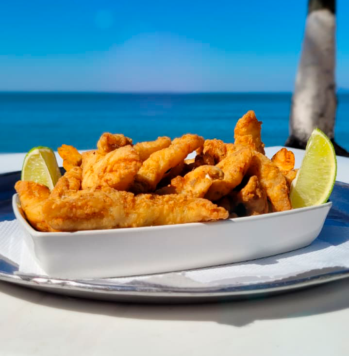
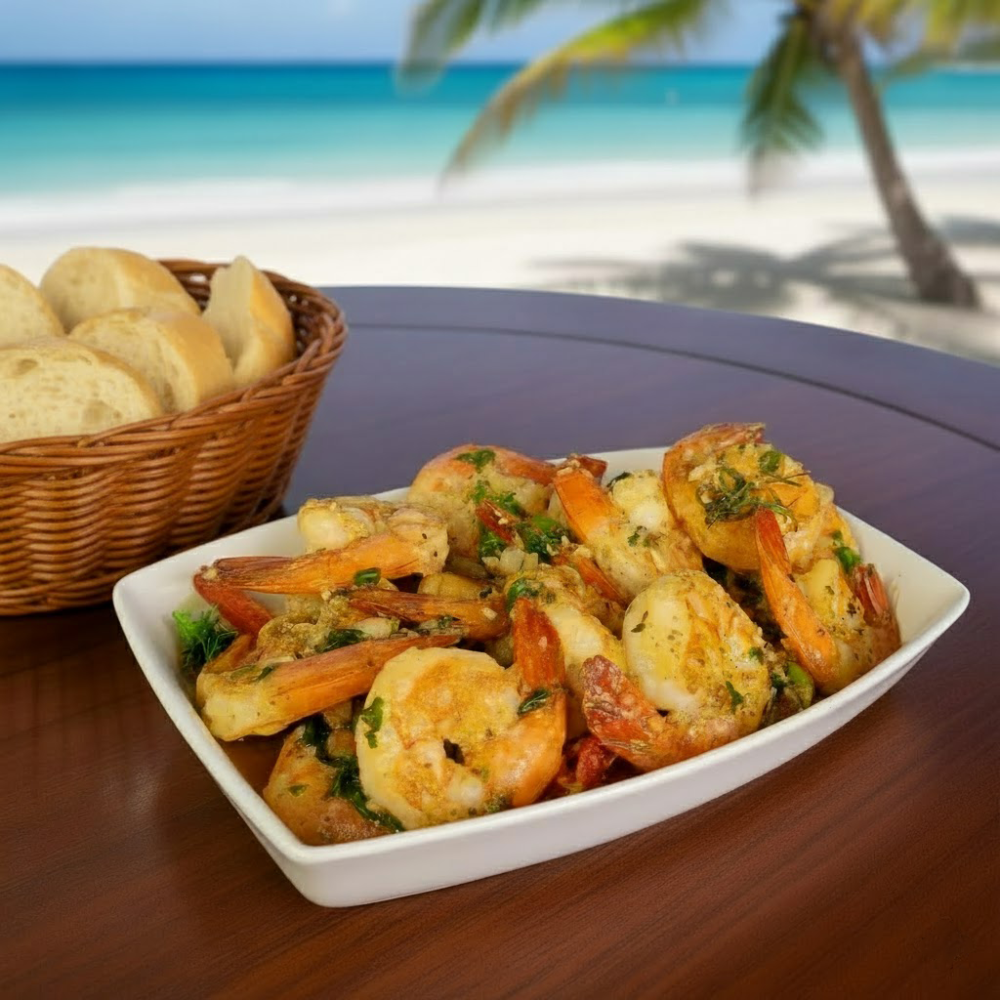
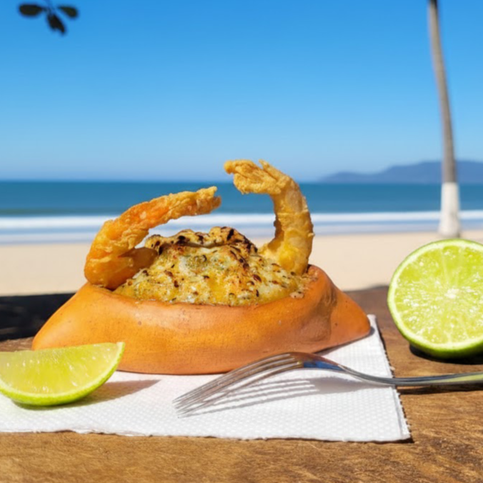
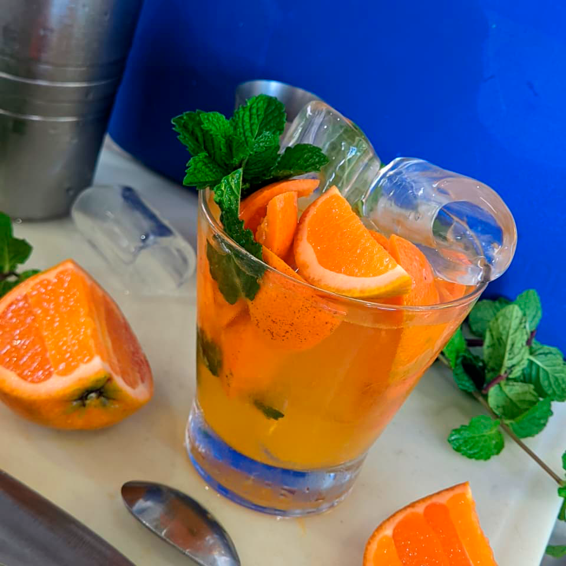
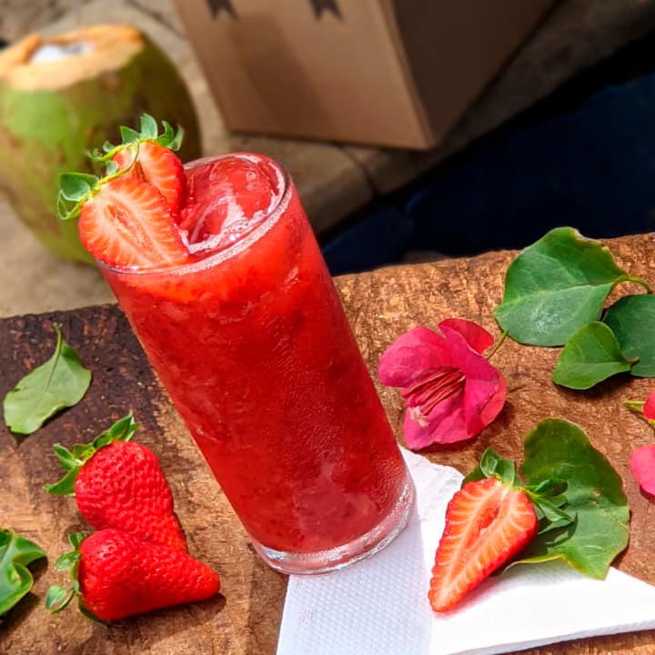
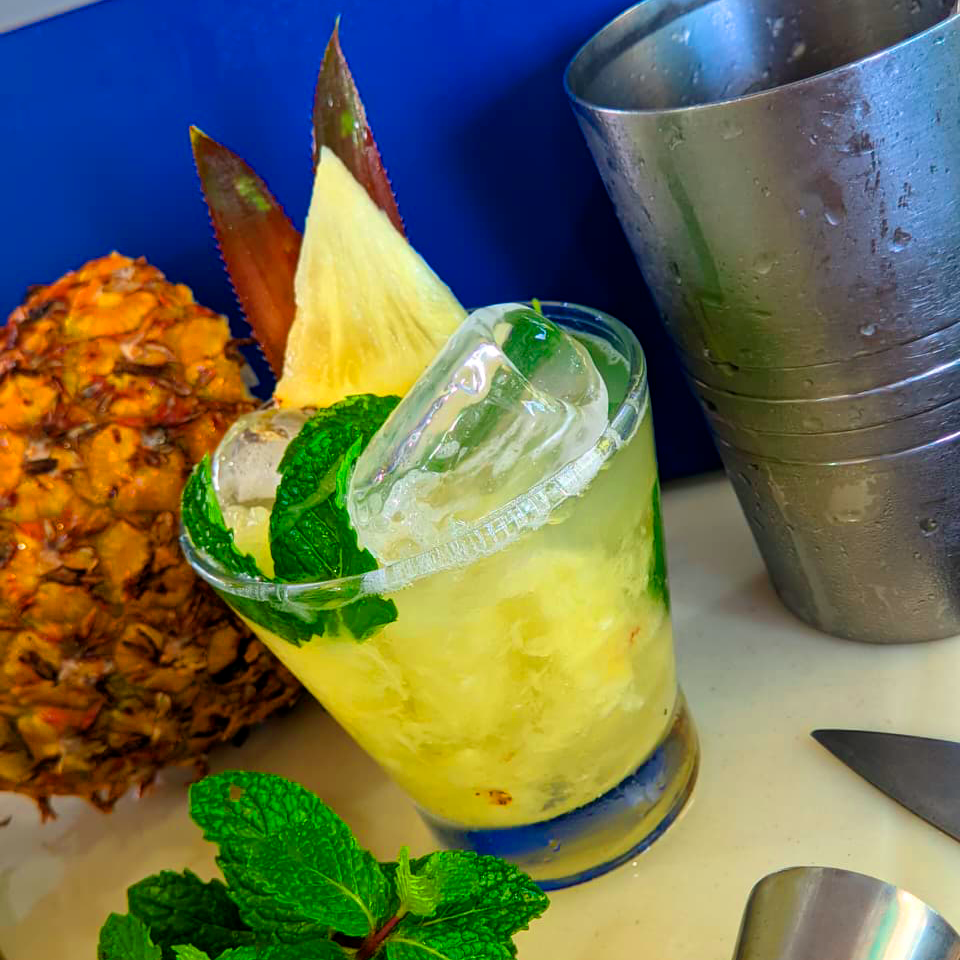

Diretamente do mar para o seu prato, todos os dias.
A Mais Alta Coquetelaria à Beira-Mar
Drinks refrescantes e cerveja trincando para enfrentar o sol do verão.
Ambiente Agradável e Acolhedor
Um local milimetricamente planejado para você aproveitar o melhor da Martim de Sá.
• Por Que Nos Escolher? •
Pratos Frescos & Deliciosos Para Todos os Gostos
Descubra os sabores que fazem do Canto Bravo o melhor quiosque de Caraguatatuba.

Iscas de Abadejo
Abadejo fresco, levemente temperado e frito no ponto ideal. Uma porção clássica e deliciosa, ideal para petiscar com a vista para o mar.

Camarão Médio à Moda Canto Bravo
Camarões frescos e perfeitamente temperados, acompanhados de uma porção de pão fresquinha.

Casquinha de Camarão
Cremosa, fresca e gratinada no ponto! Um clássico do litoral servido em uma louça de barro, com um toque cítrico de limão.

Caipirinha de Tangerina
O azedinho doce da tangerina encontra a leveza da hortelã, criando um sabor único e extremamente refrescante. Uma caipirinha aromática e perfeita para o verão.

Caipirinha de Morango
Morangos frescos e vibrantes transformados em uma caipirinha deliciosa e suave. Uma opção frutada e doce na medida certa para celebrar o momento.

Caipirinha de Abacaxi
A combinação clássica que nunca falha! O dulçor do abacaxi com o frescor revigorante da hortelã. A pedida ideal para dias de sol intenso.